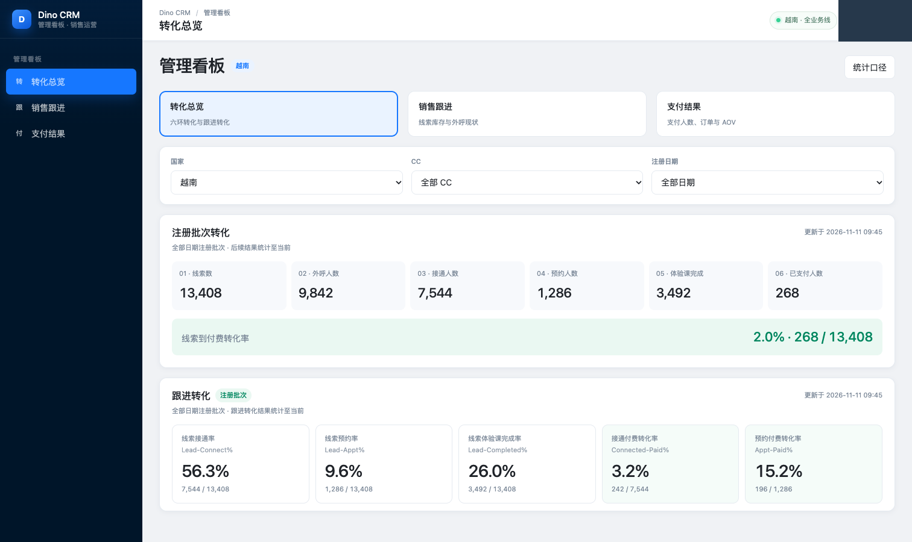
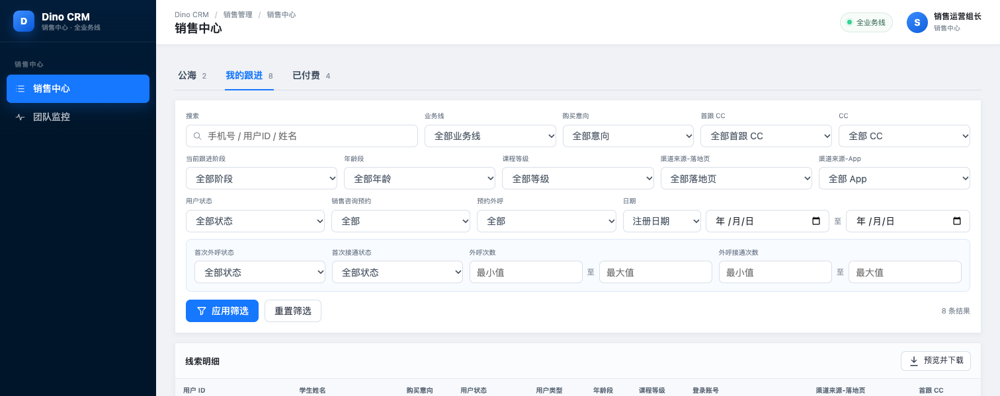
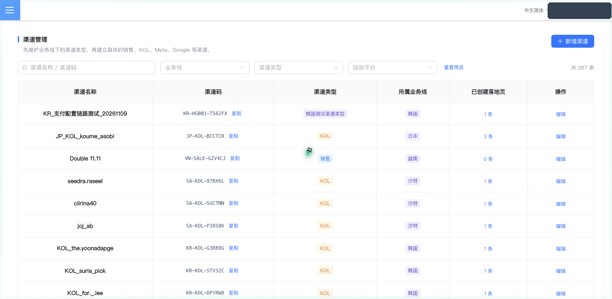
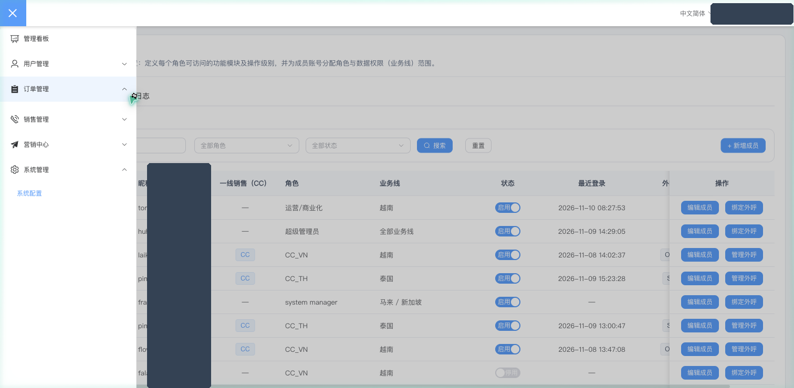
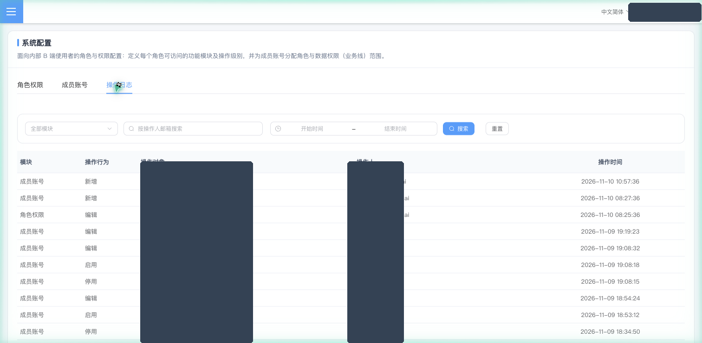
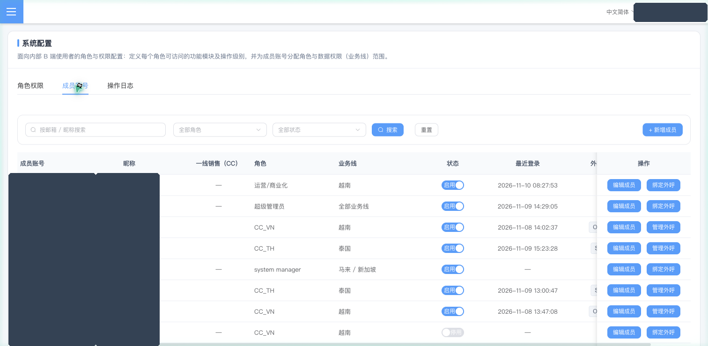

Dino CRM Handbook
Find guidance by task and role. Frontline teams can follow the steps as written; admins and super admins can switch the role filter to see configuration guides.
24guides
6modules
1.2.0current version
No guides match the current filter. Try another role or a different keyword.
G-00
Get Started: Sign In, Roles and Common Tasks
Sales RepSales LeadAdminSuper Admin
Sign in for the first time, choose the right task path for your role, and follow the basic rules for business-line scope and sensitive data.
Sign in to CRM
- Open the CRM backend and click Log in in the top-right corner.
- Enter your
@dinoai.ai email and click Send code. - Enter the 6-digit code from your email and click Log in.
- The left menu then shows only the modules allowed by your role and business lines.
Choose your task path
| Main task | Recommended reading |
|---|
| Claim leads, call customers and log follow-ups | S-00 → S-01 → S-02 → S-03 → S-04 → S-05 |
| Assign leads and monitor first-contact output | S-00 → A-02 → S-04 → S-06 → D-01 |
| Configure campaigns, products and landing pages | M-00 → M-01 → M-02 → M-03 → M-04 → M-05 |
| Troubleshoot a user or order | U-00 → U-01 → O-01 |
| Manage roles, members and data scope | A-01 → A-06 → A-03 → A-05 |
| Review conversion and commercial results | D-01 |
Confirm your access
- Menu missing: check your role and business-line assignment (A-01, A-06).
- Menu visible but no data: check the selected business line and filters.
- Only your own leads visible: Sales Reps normally see their own follow-ups; Sales Leads and authorised admins may see the full team scope.
- A direct page URL is blocked: this is expected. Copying a URL does not grant access.
Sensitive data
- Phone numbers, SMS codes, recordings, order details and exports are sensitive.
- Use an SMS code only for the user issue being handled. Never forward or screenshot it.
- Before adding membership, changing order ownership or exporting data, confirm the user, reason and authorised scope.
- The role controls what you can do; business-line scope controls whose data you can access.
- Use the audit log to verify configuration changes when unsure (A-05).
Troubleshooting
- No data: reset filters, then confirm the business line and role.
- Outbound calling unavailable: check seat binding, country route and browser network (S-02, A-04).
- User status differs from the order: record the user ID, order ID and time, then follow O-01.
- Permission or data-scope issue: record the account, business line and URL, then contact the system administrator.
Using this handbook
- Use the role chips to hide guides that do not apply to you.
- Search by task, field or symptom.
- Switch languages in the sidebar. The current version and version history are shown at the top of the sidebar.
Last updated 2026-11-10
D-01
View the Dashboard and Follow-up Conversion
Super AdminAdmin
Review six-stage conversion, five follow-up conversion metrics, sales activity and payment results for a registration cohort.
Page structure
Entry: left menu → Dashboard (管理看板).
| Tab | What it shows |
|---|
| Conversion overview | Six stages, lead-to-paid rate and five follow-up metrics |
| Sales follow-up | Current lead inventory, calls, bookings, follow-up and reasons |
| Payment results | Paid users, orders, paid amount, AOV and currency |
Review Conversion Overview
- Select the business line, CC and registration date.
- Review the six stages: leads (including paid) → called users → connected users → booked users → trial completions → paid users.
- Review overall lead-to-paid rate (L2S).
- Review the five follow-up metrics and their numerators/denominators.
- Open Metric definitions (统计口径) for formulas and scope.
Five follow-up metrics
| Metric | Formula | Question |
|---|
Lead connect rate Lead-Connect% | connected users ÷ cohort leads | Is the lead reachable |
Lead booking rate Lead-Appt% | booked users ÷ cohort leads | Lead-to-booking conversion |
Lead trial completion rate Lead-Completed% | trial completions ÷ cohort leads | Booking-to-trial completion |
Connected-to-paid rate Connected-Paid% | connected and paid users ÷ connected users | Conversion after connection |
Booking-to-paid rate Appt-Paid% | booked and paid users ÷ booked users | Conversion after booking |
Definitions and exceptions
- The five metrics use the same registration cohort, business line and CC filters as the six stages.
- Users are deduplicated by user ID; percentages use one decimal place.
- Zero denominator displays “—” and
0 / 0, not 0%. - Values above 100% remain visible and prompt a data-quality check.
- Users may skip stages, so counts do not have to decrease at every step.
- Current lead inventory and live call status do not contribute to these metrics.
- If data is delayed, show the latest complete snapshot and its update time.
Common uses
- Low connect rate: check lead quality, call coverage and routes.
- Low booking rate: review the post-connection script, available times and booking friction.
- Low trial completion rate: review reminders, attendance and delivery.
- Low paid conversion after connection or booking: review course fit, follow-up and pricing.
Screenshot

Last updated 2026-11-17
A-04
Outbound Readiness, Routes and Seat Troubleshooting
Sales RepSales LeadAdminSuper Admin
Confirm the seat and route before calling, then troubleshoot dialling, recording sync and connection issues.
Before calling
- The account has an outbound-call seat.
- The lead has a usable phone number and the correct country.
- The phone bar is online and caller ID is matched by country.
- The browser network is stable; use a supported network for providers such as Omicall.
- Start the call from Dial on the customer row. Do not type the number manually.
Common issues
| Symptom | Check first | Action |
|---|
| No Dial button | Phone number and seat binding | Report the user ID and account details to an admin |
| Phone bar offline | Seat account and phone-bar mode | Sign in again and select Web mode |
| Calling panel does not open | Network or country route | Use a stable network; record the time and country if it persists |
| Poor connection rate | Country route, caller ID and calling time | Review call records and report to the route owner |
| Recording still syncing | Third-party recording delay | Refresh later; record the call time and provider if it persists |
After the call
- Complete purchase intent and call summary, then save.
- Open Call Records and verify result, duration, recording and transcript status.
- A call without a saved summary is not a completed follow-up.
Details to include when reporting
- Business line, account and seat email.
- User ID and call start time.
- Visible symptom, error message and provider.
- Call result and recording-sync status.
Do not share full phone numbers, recording URLs or login credentials.
Related pages
- Outbound-call steps: S-02
- Call records: S-05
- Bind a member's seat: A-06
Last updated 2026-11-10
S-00
Sales Center Overview and First-Contact Fields
Sales RepSales LeadAdminSuper Admin
Manage the Lead Pool, personal follow-ups, paid users and calls; review first-contact CC, first assignment and outbound-call facts.
Page structure
Entry: Sales Management (销售管理) → Sales Center (销售中心).
``text Registered with phone → auto assignment / pending claim → follow-up → paid users remain available for renewal follow-up ``
| Tab | Content | Common actions |
|---|
| Lead Pool | Leads waiting to be claimed | Claim & Follow up |
| My Follow-ups | Your current leads | Dial, follow-up, reassign, return to pool |
| Paid | Paid users | Dial and follow renewal |
| Call Records | Call results and recordings | Play recording, download transcript |
The sidebar also provides Team Monitoring (团队监控) for authorised Sales Leads and admins. See S-06.
First-contact CC and current CC
- First-contact CC (首跟 CC): the owner at the first successful automatic assignment, Lead Pool claim or direct manager assignment.
- Current CC (当前 CC): the current owner. Transfers only update this field.
- First-contact CC and first-assignment time are written once. Transfers, returns and later claims do not overwrite them.
- A departed or renamed CC keeps the original CC ID and display-name snapshot, with account status.
- Historical records without a verifiable assignment event show Historical unknown (历史未知). Do not infer it from the current CC.
New list columns
The following columns appear after the existing source columns and before Actions:
First-contact CC → Current CC → Follow-up stage → First assigned → First outbound → First connected → Outbound calls → Connected calls
| Field | Rule |
|---|
| First assigned | First successful ownership time, precise to the minute |
| First outbound | First valid call by the first-contact CC, regardless of result |
| First connected | First connected call by the first-contact CC |
| Outbound calls | Synced call-record count; display 0 when none |
| Connected calls | Connected call-record count; cannot exceed outbound calls |
Missing assignment, outbound or connection facts display “—”. The new fact fields are read-only. The current list has no sorting control, so these fields are not sortable.
Filters and download
New filters:
- First-contact CC, placed before Current CC.
- Date type First assigned, alongside Registration time.
- First-outbound status: has record / no record / historical unknown.
- First-connected status: connected / not connected / historical unknown.
- Inclusive outbound and connected-call count ranges.
Search remains limited to phone number, user ID and student name. Filters combine and persist across tabs and pagination.
Download uses the complete filtered result, not only the current page, and includes first-contact CC, current CC, first times and call counts.
Screenshots


Notes
- First-contact CC identifies the initial owner; it is not necessarily the current attribution owner.
- Outbound-call counts are record counts and must not be confused with called-user counts.
- Phone numbers, recordings and exports are sensitive.
Last updated 2026-11-17
S-01
How to Claim a New Lead
Sales RepSales Lead
Claim a lead pending follow-up from the Lead Pool tab in the Sales Center.
Steps
- Entry: Sales Management (销售管理) → Sales Center (销售中心) → Lead Pool (公海) tab.
- Use filters (筛选器) to narrow the scope (country, purchase intent, age group, channel source, etc.), or search directly by phone number / user ID / name.
- Click Claim & Follow up (领取跟进) on the target row.
- Check My Follow-ups (我的跟进) to confirm the customer is now assigned to you.
How leads enter the Lead Pool
- Registered users who do not match any assignment weight enter Pending claim (the Lead Pool).
- Leads that have been under follow-up for over 30 days without payment, or that were manually returned, go back to the Lead Pool.
Confirm completion
The customer appears in My Follow-ups, and the Lead Pool count decreases accordingly.
Notes
- Do not claim customers that are not yours to handle.
- The purchase intent field (Interested / Not interested / Not set) helps you prioritize high-intent leads.
Screenshot

Last updated 2026-11-10
S-02
How to Make an Outbound Call and Log a Call Summary
Sales RepSales Lead
Click Dial in the Sales Center to start an outbound call, then complete and save the call summary after hanging up; first-time users must finish phone bar setup.
Steps
- Entry: Sales Management (销售管理) → Sales Center (销售中心) → My Follow-ups (我的跟进) (or Paid (已付费)) tab.
- After verifying customer information, click Dial (拨号) on the row to start the outbound call.
- After the call ends, complete the call summary and purchase intent, then save.
- Check Call Records (通话记录) to verify.
System behavior (original page text)
The outbound call system is lightly integrated with the CRM: the agent clicks a number to start the call, fills in the call summary after hanging up, and the system automatically files it into the customer profile and sales follow-up records.
Confirm completion
The call appears in both Call Records and the customer timeline.
Notes
- Call outcomes are recorded automatically by the system; an unsaved summary does not mean the call is logged.
- The system does not support manual phone number entry; outbound calls must be initiated via the in-row Dial action.
First-time call setup
Required once, only for sales reps logging in to the phone bar and making an outbound call for the first time.
- Log in on the phone bar and select the Web mode.
- "Select caller ID rule" → Dynamic caller ID plan matching → Match by country.
Last updated 2026-11-10
S-03
How to Record a Follow-up
Sales RepSales Lead
Use the in-row More → Update follow-up in My Follow-ups to log customer feedback, next actions, and callback time in the CRM.
Steps
- Entry: Sales Management (销售管理) → Sales Center (销售中心) → My Follow-ups (我的跟进) tab.
- Find the customer and click More (更多) → Update follow-up (更新跟进).
- Fill in customer feedback, next action, and callback time.
- Save and check the timeline.
Confirm completion
The latest note and last updated time are refreshed.
Notes
- Notes must be understandable to the next colleague.
- The in-row More menu in My Follow-ups also offers: Trial Lesson Report (试听课报告), Reassign lead (重新分配线索) (team leads), Add membership duration (添加会员时长).
- Leads with no follow-up records for a long time are auto-released (掉库) automatically (7200 minutes after claiming by default, see A-02); updating follow-ups promptly is how you keep your leads.
Screenshot
Last updated 2026-11-10
S-04
How to Reassign a Lead or Return It to the Lead Pool
Sales LeadSuper Admin
Sales leads can hand over leads via More → Reassign lead in My Follow-ups; returning a lead to the Lead Pool requires a reason.
Steps
- Entry: Sales Management (销售管理) → Sales Center (销售中心) → My Follow-ups (我的跟进) tab.
- Reassign (重新分配): click More (更多) → Reassign lead (重新分配线索), select the new sales rep, and confirm.
- Return to Lead Pool (退回公海): choose Return in the More menu, fill in the return reason, and confirm.
Confirm completion
The timeline shows the handover or return record; the transferred lead disappears from My Follow-ups.
Notes
- The return reason must be written clearly; after a return, the lead must be claimed manually again.
- Team leads can view and reassign follow-up leads of all sales reps in their team (within their business line scope); regular sales reps have no reassignment permission.
- The in-row menu for Paid users has no Return to Lead Pool option.
- Leads unpaid for more than 30 days are auto-reclaimed by the system; no manual action is needed.
Screenshot
Last updated 2026-11-10
S-05
How to View Call Records and Recordings
Sales RepSales Lead
Review outbound call records by customer or call outcome in the Call Records tab of the Sales Center, with playback of recordings and transcript download.
Steps
- Entry: Sales Management (销售管理) → Sales Center (销售中心) → Call Records (通话记录) tab.
- Search by user ID / name / login account, or filter by country, call outcome, outbound call agent email, and time range.
- Verify: call start time, user ID, name, phone number, call outcome, duration, Recording (录音), Transcript (文字稿), and follow-up record for this call.
- For calls marked Connected (已接通), click Play recording (播放录音); where a transcript exists, click Download transcript (下载文字稿).
Field notes
- Call outcome: Connected (已接通) / No answer (无人接听), etc.
- Recording: shows Play recording or Syncing (recordings of recently ended calls need time to sync).
- Transcript: shows Download transcript or Recording not yet available.
Confirm completion
You can locate the target call and decide the next step.
Notes
- Recordings of calls that just ended may show Syncing; refresh later.
- Regular sales reps can usually view only their own call records.
Screenshot

Last updated 2026-11-10
S-06
View Team Monitoring and First-Contact Output
Sales LeadAdminSuper Admin
Review first-contact ownership, first outbound, first connection and call output by business line, first-contact CC and date.
Entry and filters
Entry: Sales Management (销售管理) → Team Monitoring (团队监控).
Filters:
- Business line.
- First-contact CC.
- Date type: registration time / first-assignment time.
- Start and end dates.
Results are limited by the account's business-line and team scope. Sales Reps do not gain access automatically.
Top metrics
| Metric | Definition |
|---|
| First-contact leads | Deduplicated leads with a non-empty first-contact CC |
| First-contact coverage | First-contact leads ÷ all filtered deduplicated leads |
| Outbound calls | Call count for the first-contact lead set |
| Connected calls | Calls in the first-contact lead set with a connected result |
| Call connection rate | Connected calls ÷ outbound calls |
The Definition (口径) control shows numerator, denominator, scope, date field and deduplication rule.
First-contact CC summary
For each first-contact CC:
- First-contact lead count.
- First-outbound leads and coverage.
- First-connected leads and coverage.
- Outbound-call and connected-call counts.
Calls are deduplicated by Call ID. First outbound includes connected, rejected, unanswered and failed calls; first connected requires a real connected record.
Cards and table rows are display-only and do not drill into Sales Center or a lead list.
Export
Export current view uses the current filters and permission scope, without a page-size limit. A failed export must not create a blank or partial file.
Exceptions
- Missing first-contact event: display Historical unknown (历史未知); do not infer from current CC.
- Call data not yet synced: keep the last successful value and show its update time.
- Zero denominator: display “—”, not 0%.
- First-contact CC departed: retain the name/ID snapshot and account status.
- Permission change: enforce the latest permission on the next query, export or refresh.
Screenshot

Last updated 2026-11-17
M-00
Marketing Center Setup Overview
AdminSuper Admin
The five-step Marketing Center setup chain: Channel → SKU → Channel SKU association → Landing Page → Skin, supporting attribution and selling.
Setup Chain
| Step | Manual | In one sentence |
|---|
| 1. Channel | M-01 | Create a channel and get the system-generated channel code |
| 2. SKU | M-02 | View sellable SKUs maintained by the product system (read-only) |
| 3. Channel SKU association | M-03 | One rule set per channel: what to sell, at what price, with what promo |
| 4. Landing Page | M-04 | Acquisition pages link to channels; payment pages link to SKUs and generate an LP ID |
| 5. Skin | M-05 | Page style templates; publishing generates a template ID |
Attribution and transaction chain: Channel Code → Landing Page (LP ID) → Registration/Payment → Order (O-01) → Lead enters the Sales Center (S-00).
Last updated 2026-11-10
M-01
Add and Maintain Channels
AdminSuper Admin
Maintain channel types for business lines first, then create specific Sales, KOL, Meta, Google and other channels; channel codes are system-generated.
Steps
- Entry: Marketing Center (营销中心) → Channel Management (渠道管理).
- Click + New Channel and fill in the channel name, then select the business line and channel type.
- The system automatically generates a Channel Code (渠道码) (e.g.
KR-HG001-T562FX, in the format country-type-number), which can be copied with a click. - To make changes, click Edit (编辑) in the row.
Field Reference
| Field | Description |
|---|
| Channel Name | Business naming (e.g. Double 11.11, JP_KOL_koume_asobi) |
| Channel Code | System-generated, globally unique, used for landing page and order attribution |
| Channel Type | Sales / KOL / ad platform, etc.; types must be maintained first |
| Business Line | Korea, Japan, Vietnam, Saudi Arabia, etc. |
| Landing Pages Created | Number of landing pages created under this channel |
Completion Check
The new channel appears in the list and its channel code can be copied; filters (channel name/channel code, business line, channel type, ad platform) are available.
Notes
- Channels are the root of attribution: landing pages (M-04), SKU associations (M-03), and orders (O-01) all attach to the channel code.
- One channel maintains one set of association rules (see M-03).
Screenshots

Last updated 2026-11-10
M-02
Query Sellable SKUs
AdminSuper Admin
SKUs are maintained centrally by the product system; the Marketing Center is only used to query and select existing products.
Steps
- Entry: Marketing Center (营销中心) → SKU Management (SKU 管理).
- Search by Product Code / Package Name, or filter by business line and selling status.
- Verify fields: business line, Package Name, Member Level, product code, Payment Mode, original price, validity period, applicable platform, display strategy, and status.
Field Reference
- Product code pattern:
web-country-level-duration (e.g. web-th-pro-1y = Thailand PRO annual plan). - Member Level: PRO / PRO_MAX.
- Payment Mode: ONE_TIME (one-time buyout), etc.
- Validity period: 1W / 1M / 1Y.
- Display strategy: Recommended, etc.; Status: on sale.
- Original prices are denominated in each country's local currency (Japan ¥, Singapore S$, Thailand ฿, Indonesia Rp, Malaysia RM).
Completion Check
You can find the target SKU with its original price and validity period, for use in later channel association (M-03) and landing page configuration (M-04).
Notes
- The Marketing Center cannot add or modify SKUs; product changes must go through the product system.
Screenshots

Last updated 2026-11-10
M-03
Configure Channel SKU Associations and Selling Prices
AdminSuper Admin
Each channel maintains one set of association rules; view selling rules and payable amounts for each SKU in one row, with discount or instant-reduction options.
Configuration Rules (page text)
One channel corresponds to one set of association rules; existing rules can be edited and history can be viewed. SKUs within a plan cannot be duplicated; each SKU can be sold at the original price, at a discount, or with an instant reduction. The discounted price must not be lower than 60% of the original price.
Steps
- Entry: Marketing Center (营销中心) → Channel SKU Pricing Plan (渠道 SKU 价格方案).
- Click + New Association and select a channel (one rule set per channel).
- Select products from existing SKUs (M-02) and set the selling method: original price / discount / instant reduction.
- Optionally configure a Promo Code (when not configured, it shows "No discount, not generated").
- Set the validity period; editing existing rules keeps history records ("History" in the row).
Field Reference
| Field | Description |
|---|
| SKU and Selling Rules | SKU, level, product code, selling rule, payable amount |
| Promo Code | The promo code for this channel |
| Validity Period | Effective interval of the association |
| Landing Pages Bound | Number of landing pages created under this plan |
| Status | Active / Ended |
Completion Check
The channel row shows the correct SKU payable amount and validity period; the status is "Active".
Notes
- The association determines the products and prices available on landing pages (M-04); confirm active landing pages before changing prices.
- The 60% discount floor is a hard constraint; configurations exceeding it will be blocked.
Screenshots

Last updated 2026-11-10
M-04
Create Landing Pages and Get Campaign Links
AdminSuper Admin
Choose the page type first: acquisition landing pages link only to a channel; payment landing pages additionally link to SKUs, with an optional promo.
Creation Rules (page text)
Acquisition landing pages only record the channel, LP ID, and page configuration; payment landing pages additionally record the selected SKUs, and carry a Promo Code only when "Use Promo" is selected.
Steps
- Entry: Marketing Center (营销中心) → Landing Page Management (落地页管理).
- Click + New Landing Page and select the page type (acquisition landing page / payment landing page).
- Acquisition landing page: select a channel and configure the page (skins, see M-05).
- Payment landing page: additionally select SKUs (from the channel association plan, M-03); check "Use Promo" if a discount is needed.
- After saving, an LP ID is generated and the link can be copied for campaigns.
Field Reference
| Field | Description |
|---|
| Page Type | Payment landing page / acquisition landing page |
| Page Style | Template ID, e.g. KR_SKIN_A (from M-05) |
| LP ID | System-generated (e.g. LP-EQJVRCQURJ), can be copied |
| Row Actions | Details / History / Edit / Copy Link |
Completion Check
The new landing page appears in the list, the LP ID can be copied, and the "Landing Pages Bound" count is updated in the channel (M-01).
Notes
- Landing pages attach to the channel code; the attribution chain is: Channel (M-01) → Channel SKU association (M-03) → Landing Page (this manual) → Order (O-01).
- To change the page style, publish a template for the corresponding business line in Skin Management first.
Screenshots

Last updated 2026-11-10
M-05
Configure Landing Page Skins
AdminSuper Admin
Configure landing page skins per business line; only after submission are they published and a template ID generated for selection in Landing Page Management.
Page Description (original text)
Configure landing page skins per business line. You can save a draft and leave temporarily; only after submission is it published and a template ID generated, which Landing Page Management selects as the "Skin Type" by business line.
Steps
- Entry: Marketing Center (营销中心) → Landing Page Skin Management (落地页皮肤管理).
- Click + New Skin and select the business line and landing page type (payment landing page / acquisition landing page).
- Configure the registration method: register an account with mobile number (with/without verification), no registration, or third-party login only.
- You can save a draft; after clicking submit it is published and a template ID (e.g.
KR_SKIN_A) is generated. - Row actions: Preview, Edit (editing after publishing generates a new version number V2/V3...), and Operation Log.
Field Reference
| Field | Description |
|---|
| Template ID | Generated after publishing; Landing Page Management (M-04) selects by this ID |
| Status | Published · V version number / Draft (unpublished) |
| Registration Method | Determines users' registration behavior on the landing page |
Completion Check
The skin status is "Published" with a template ID; the template can be selected when creating a new landing page in Landing Page Management.
Notes
- Unpublished drafts do not appear in the skin options of Landing Page Management.
- Every edit and publish produces a new version; history can be traced via the operation log.
Screenshots

Last updated 2026-11-10
O-01
Find Orders, Verify Status and Export
Sales RepSales LeadAdminSuper Admin
Locate orders by order, user, product and promo code; verify payment, user status and price; export the current filtered set.
Find an order
Entry: Order Management (订单管理) → Order Center (订单中心).
- Search by Order ID / User ID / product name / promo code.
- Filter by country, user type, order status and payment method.
- Click Export to download the current filtered set.
List fields
| Field | Description |
|---|
| Order ID | PO usually indicates an in-app purchase; WEB usually indicates a landing-page purchase |
| Product name | Annual, 1 Year, 6 Months and other plans |
| User ID | Link the order to User Center, Sales Center and membership records |
| Promo code | Promo Code applied to the order |
| User type / country / user status | Identify test data and the user's current status |
| Order status | Pending payment / canceled / paid |
| Original price | Plan list price; use the visible payment fields to verify the charged amount |
Common checks
User paid but shows the wrong status
- Find the latest order by user ID.
- Verify status, payment method and time.
- Check the user status in User Center.
- If they disagree, record the user ID, order ID, payment time and symptom. Do not export a broad raw dataset.
Order not found
- Clear the search term and query by user ID only.
- Check country, status and payment-method filters.
- Confirm the business line.
- If still not found, send the user ID, order time and payment method to an administrator.
Bulk reconciliation
Narrow country, status, payment method and time range before exporting. Use the file only for the authorised business purpose.
Notes
- Promo pricing rules are in M-03; the discounted price cannot be below 60% of the original price.
- Paid users currently remain in Sales Center for renewal follow-up.
Screenshot

Last updated 2026-11-10
U-00
Users and Orders Management Overview
Sales RepSales LeadAdminSuper Admin
Entry points and manual index for the two modules: user management (User List) and order management (Order Center).
Manual Index
| Page | Manual | Common Operations |
|---|
| User Management (用户管理) → User List (用户列表) | U-01 | Find users, check SMS codes, edit information, add membership, export |
| Order Management (订单管理) → Order Center (订单中心) | O-01 | Query orders (PO/WEB prefixes), filter statuses, export |
Data linkage: user pays → user status becomes "Paid" → paid users currently remain in Sales Center for renewal follow-up (S-00) → the order can be found in the Order Center (O-01).
Last updated 2026-11-10
U-01
Find Users and Handle User Issues
Sales RepSales LeadAdminSuper Admin
Find users by identity, channel, country and status; review account information, SMS codes and learning stage; perform permitted profile or membership actions.
Find a user
Entry: User Management (用户管理) → User List (用户列表). The page title is User Center (用户中心).
- Search by User ID / name / login account.
- Filter by user type, registration method, channel source - Landing Page, channel source - App, country and user status.
- The list refreshes after a filter is selected. Use Reset filters to clear conditions.
Read the list
| Field | Use |
|---|
| User ID | Primary identifier for matching users, orders and leads |
| User status | Not paid, no trial / not paid, in trial / paid |
| User type | Registered / guest; guest users normally have no login account or row actions |
| Age range and course level | Understand the learner and course fit |
| Registration method and login account | Troubleshoot login and account issues |
| SMS verification code | Troubleshoot a user who cannot receive the code |
| Channel source | Distinguish landing-page and App attribution |
| Actions | Edit information, add membership or change trial level according to permission |
Common tasks
View an SMS verification code
- Confirm the user is registered and you are handling their login issue.
- Click the SMS-code icon on that row.
- Use the code only for this login issue. Never forward, screenshot or reuse it.
Edit profile / add membership / change trial level
- Open the row Actions menu.
- Select the action and verify the user ID and requested change.
- After success, refresh the list and cross-check the order or audit record when needed.
Export users
Click Export. The file follows the current filters. Export requires a separate permission; narrow the filters when the result is too large.
No action button
- Guest users normally have no login account or row actions.
- A sensitive action is hidden when your role lacks permission.
- Send the user ID, page and required action to an administrator. Do not bypass access by changing URLs or page parameters.
Notes
- Phone numbers, SMS codes and exports are sensitive (A-03).
- Confirm profile or membership changes against both the refreshed list and the related order/membership record.
Screenshot

Last updated 2026-11-10
A-01
Roles and Permissions Overview
Super AdminAdmin
The System Configuration page contains the Roles & Permissions, Member Accounts, and Audit Log tabs; it defines the modules and operation levels each role can access, and assigns roles and data scope (business lines) to member accounts.
Page structure
Entry: System Management (系统管理) → System Configuration (系统配置). The page has three tabs:
| Tab | Purpose | Detailed manual |
|---|
| Roles & Permissions (角色权限) | Define roles, accessible modules and operation levels | See this article |
| Member Accounts (成员账号) | Add/edit members, assign roles and business lines, bind outbound calling | See A-06 |
| Audit Log (操作日志) | Audit all configuration changes | See A-05 |

Roles & Permissions tab
- Entry: System Management → System Configuration → Roles & Permissions.
- The role list shows: role name (with built-in / preset badges), responsibility description, data scope (all business lines / specified business lines), member count.
- Click + Add Role (+ 新增角色) to create a new role; click Edit Permissions (编辑权限) on a row to adjust the modules and operation levels the role can access; Delete Role (删除角色) is available only for non-built-in roles.
Built-in system roles (actual list, verified 2026-11-10)
| Role | Badge | Data scope | Description |
|---|
| Super Admin (超级管理员) | Built-in | All business lines | Full access to all modules |
| Operations/Commercial (运营/商业化) | Preset | Specified business lines | Operable in User Center / Order Center |
| Frontline Sales (一线销售) | Preset | Specified business lines | Basic information query and operations in User Center / Sales Center / Order Center |
| CC_VN / CC_TH | Preset | Specified business lines | Vietnam / Thailand call center agent roles |
| system manager | Preset | Specified business lines | System administrator for each business line |
| Business Owner / CFO Office / HQ Partner / Channel Promotion / QA (业务负责人 / CFO Office / 总部伙伴 / 渠道推广 / 测试专用) | Preset | Varies by role | Divided by job function |
Completion check
The new role is visible in the role list with the correct member count; after a member logs in, menus and data range match expectations.
Notes
- Super Admin is a built-in role and cannot be deleted; permission changes for it have the widest impact, so confirm with the business owner before making changes.
- A role's data scope (business line range) determines which country's data members can see; changing a role affects all members under it at once.
- All role permission changes are recorded in the Audit Log (see A-05).
Screenshots

Last updated 2026-11-10
A-02
Lead Assignment and Auto-Release Rules
Super AdminAdmin
In Distribution & Auto-Release Settings at the top right of the Sales Center, configure auto-release rules and lead allocation ratios per business line.
Steps
- Entry: Sales Management (销售管理) → Sales Center (销售中心) → Distribution & Auto-Release Settings (分配与掉库设置) at the top right.
- Select the business line (所属业务线) (e.g. Malaysia).
- Configure the auto-release rule (掉库规则): a toggle plus "if no follow-up record within N minutes after a lead is claimed, auto-release it and re-assign by ratio" (currently 7200 minutes by default).
- Maintain the lead allocation ratio (线索分配比例) table: one row per claimer, set the allocation weight (0 means not participating in assignment).
Rule interactions (original system text)
- Registered users matching a business line allocation weight (weight > 0) go directly to "In Follow-up (跟进中)", otherwise they enter the Lead Pool (公海) as "Pending Claim (待领取)".
- Auto-released leads are re-assigned according to the current allocation ratio.
- A lead unpaid for more than 30 days, or manually returned to the Lead Pool, must be claimed again manually.
Completion check
After the settings are saved, newly registered leads flow to the corresponding sales reps per the new ratios; the auto-release rule takes effect in "My Follow-ups (我的跟进)".
Notes
- ⚠️ Changing allocation ratios instantly changes the lead flow of online sales reps; make changes off-peak and leave a trace in the Audit Log (操作日志) (A-05).
- Setting a weight to 0 suspends automatic assignment for that sales rep without affecting their existing follow-up leads.
- The auto-release minutes and the "30-day unpaid recovery" are two independent mechanisms: the former checks follow-up record recency, the latter checks payment outcome.
Screenshots

Last updated 2026-11-10
A-03
Roles, Data Scope and Sensitive Operations
Super AdminAdmin
Understand how roles, business-line scope and sensitive-operation permissions determine what a member can see and do.
Three permission layers
| Layer | What it controls | Where it is configured |
|---|
| Role | Module and operation access | System Configuration → Roles & Permissions |
| Business line | Which country or business-line data is visible | Role data scope + member business lines |
| Sensitive action | Phone numbers, recordings, exports and high-risk actions | Detailed permissions under the role |
After changing a role, verify:
- The member is assigned to the correct role.
- The member's business lines cover the intended data.
- The role has the required sensitive permissions.
- Existing sessions behave according to the permission policy.
Common checks
- Menu missing: check the role's module permission.
- Menu visible but list empty: check business-line scope and filters.
- Only own leads visible: Sales Reps normally have an individual scope.
- Direct URL blocked: backend permission is working; a copied URL does not grant access.
- User visible but phone masked: phone access is a separate sensitive permission.
Sensitive operations
Grant only when operationally necessary:
- View clear phone numbers or SMS verification codes.
- Play or download call recordings and transcripts.
- Export users, orders, leads or call records.
- Add membership, change expiry or transfer order ownership.
- Make outbound calls or reassign leads.
Confirm the user, business reason and scope before acting. Use A-05 to review configuration changes. Escalate privacy or cross-border questions under the company's compliance process.
Related pages
- Configure roles: A-01
- Configure members and business lines: A-06
- Review configuration logs: A-05
Last updated 2026-11-10
A-05
Querying the System Configuration Audit Log
Super AdminAdmin
In the System Configuration → Audit Log tab, trace who changed which configuration and when by module, operator, and time range.
Steps
- Entry: System Management (系统管理) → System Configuration (系统配置) → Audit Log (操作日志) tab.
- Combine filters as needed: Module (模块) (e.g. Member Accounts (成员账号), Roles & Permissions (角色权限)), operator email (操作人邮箱), start/end time (开始/结束时间).
- Click Search (搜索) to view results; the list fields are: Module, Action (add/edit/enable/disable, etc.), Object, Operator, Time.
Completion check
You can locate the target change record and confirm the operator and the time it occurred.
Notes
- Every change to roles & permissions and member accounts is recorded automatically; no manual registration is needed.
- Logs are for tracing and review only; they cannot be modified or deleted.
- Admins are advised to spot-check changes related to permissions and outbound calling binding once a week (see A-03 for compliance retention requirements).
Screenshots

Last updated 2026-11-10
A-06
Managing Member Accounts and Binding Outbound Calling
Super AdminAdmin
In the System Configuration → Member Accounts tab, add/edit members, assign roles and business lines, enable or disable accounts, and bind outbound calling for agents.
Steps
- Entry: System Management (系统管理) → System Configuration (系统配置) → Member Accounts (成员账号) tab.
- Click + Add Member (+ 新增成员), fill in the email and nickname, and assign a role and business line (data scope (数据权限) follows the role).
- For existing members: search by email/nickname, or filter by role and status, then click Edit Member (编辑成员) to modify information.
- For call center agents, click Bind Outbound Calling (绑定外呼) (already-bound rows show Manage Outbound Calling (管理外呼)) to complete the phone bar account association (for usage on the sales side see S-02).
- When a member leaves or is inactive for a long time, switch their status to Disabled (停用).
Completion check
The new member is visible in the member list with correct status and business line; agent rows show the bound outbound calling badge (CC).
Notes
- Roles determine functional scope and business lines determine data scope; both must be assigned correctly.
- Disabling does not delete historical follow-ups and Call Records; data becomes visible again automatically after re-enabling.
- Every add/edit/enable-disable of a member enters the Audit Log (操作日志) (see A-05).
Screenshots

Last updated 2026-11-10